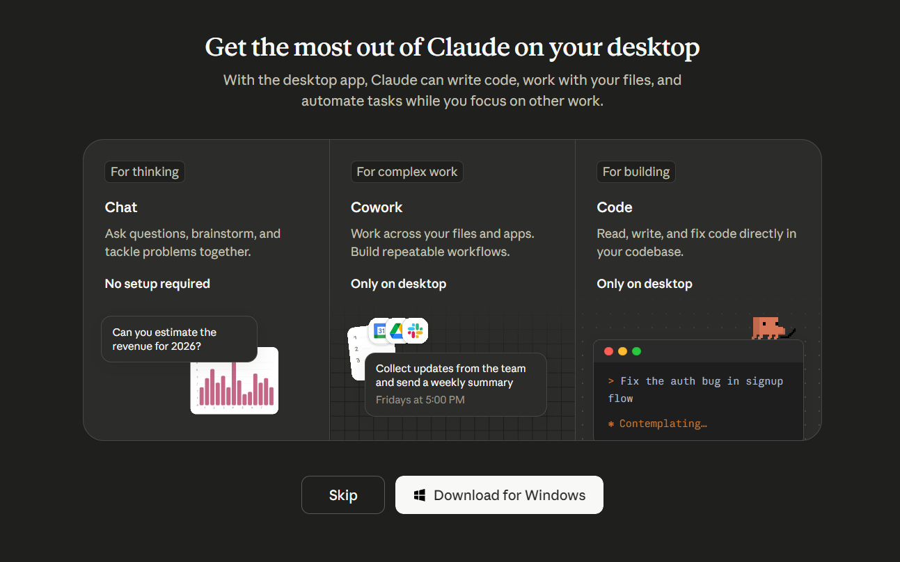
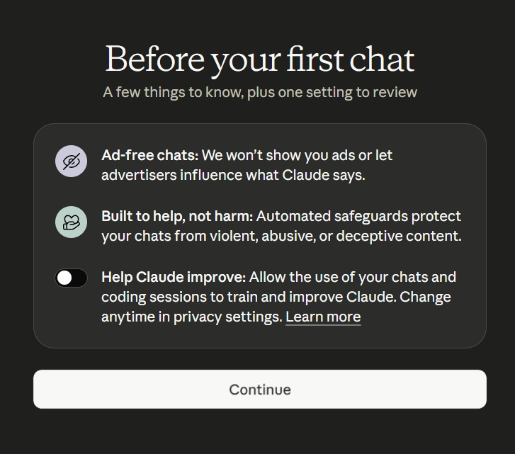

Pre-Work · 10 minutesATD Houston · Technology SIG · April 2026
Before we meet: get Claude ready.
A short guide to set up your free Claude account and arrive ready to work. Fifteen minutes, tops. You'll thank yourself when we start.
Part OneWhy this matters
The workshop is hands-on. You'll write real prompts, on your real work, in your own Claude account. If you arrive with the account already created and one prompt already tried, you'll get twice as much out of our hour together.
Everything we do in the session works on the free plan. No credit card needed. If you already have a paid Claude account, you're set — skip to Part Three.
Part TwoCreate your free account
Go to claude.ai
Open a browser and visit claude.ai. You'll see a sign-in page.
Choose a sign-in method
Sign up with Google, email, or Apple ID. A personal email is fine — you don't need a work account.
Confirm your email
Click the confirmation link Anthropic sends. Set a password if you used email sign-up.
Accept the usage policies
Read the acceptable-use highlights. Nothing surprising — no harmful content, no using Claude to harass people, be a reasonable human.
Complete the welcome flow
Anthropic will ask a couple of questions about how you plan to use Claude. Answer honestly; it doesn't affect your access.
Download the desktop app (optional but recommended)
During setup, Claude will show you a Get the most out of Claude on your desktop screen. I recommend downloading it — but everything we do in this session works fine in the browser, so feel free to click Skip for now and download it later.

The desktop app screen — click Download or Skip for now.
Why download it eventually? The desktop app adds things the browser can't reach — Cowork, Claude Code, and local file integrations via Desktop Extensions. If you're on a paid plan, these are worth having. You can always grab it later at claude.com/download.
Review "Help Claude improve"
On the Before your first chat screen, you'll see three items — the last is a toggle for Help Claude improve, which allows Anthropic to use your chats to train future models.

The welcome screen where you'll see the toggle.
Your choice — but as a best practice, I recommend switching it off, or at least reading Learn more before leaving it on. You can change it anytime in Settings → Privacy.
Confirm you're on the Free plan
Open your profile menu (bottom-left) and look for your plan badge. You should see "Free." That's what we want. You may also be prompted to download Claude Code — choose Maybe Later. We won't be covering Claude Code in this session.
If something goes sideways
Anthropic occasionally pauses new signups in a region for capacity reasons. If that happens, try again the next day.
Part ThreeTry one prompt before we meet
Opening Claude for the first time during a workshop is awkward. Open it now, send one real message, and the workshop feels like the second visit, not the first.
Your five-minute first run
Click New Chat. Paste the prompt below. Replace the bracketed parts with something true about your work. Send it. Read what comes back.
Note: if during the welcome flow you picked topics you're interested in, Claude may offer you a starter prompt on your first visit. Feel free to use that one instead and just go with the flow — the point is to send something real before we meet.
Act as a thoughtful L&D peer who asks good questions.
I'm preparing for a short workshop on [TOPIC YOU KNOW WELL]
for an audience of [WHO YOUR LEARNERS ARE].
Before you give me any advice, ask me 5 clarifying questions
that would help you give a better answer. Number them.
Wait for me to respond before you say anything else.
That's it. Notice what it asks. Notice whether the questions are obvious, sharp, or surprising.
Part FourTurn on Skills (2 minutes)
Skills are pre-built procedures Claude can run for you — things like document creation, data analysis, or visual design. Some are on by default; some you need to enable. We'll use at least one together during the session, so flip these on now.
Find the Skills panel
From your profile menu (top-left), click Customize → Skills. You should see one skill there already — skill-creator.
Click the + sign to browse Skills
Flip the toggle to on for each of these:
doc-coauthoring — structured workflow for creating documentation
canvas-design — use design philosophy to create posters and other designs
claude-designer — the new Claude Designer (just released — available to most free accounts)
web-artifacts-builder — create HTML artifacts
Leave the rest alone
Don't worry about community-built or custom Skills yet — we'll cover those together in the session.
Don’t see some of them?
Anthropic rolls features out in waves, and some Skills are newer than others. If you don’t see Claude Designer on your free account yet, that’s fine — I will have a few screenshots for you.
Part FiveConnect Canva (3 minutes)
We’ll do a live demo of the Canva Connector — asking Claude to turn a learning objective into a polished Canva asset, in real time, without leaving the chat. It’s free and available on the free plan. If you want to follow along on your own screen, connect it now.
Have a Canva account
A free Canva account is fine. If you don’t have one, sign up at canva.com — takes a minute.
Open the Connectors panel
From your profile menu (bottom-left), click Customize → Connectors, then click the + to browse. There are plenty of options here — at a minimum, connect Canva. Feel free to explore others; popular ones include Google tools, Microsoft tools, and Notion.
Find Canva in the list
Scroll until you see the Canva tile, then click Connect.
Authorize Claude
A Canva login window opens. Sign in, then click Allow to let Claude read and write to your Canva account.
Confirm it's live
Back in the Connectors panel, the Canva tile should show Connected. You're done.
A note on permissions
The Canva Connector lets Claude create and edit designs in your Canva account. Only connect accounts you control. You can disconnect at any time from the same Connectors panel.
Part SixA short primer — why Claude, specifically
You don't need to know this before the session, but a lot of people ask. In short: Claude is made by Anthropic, an AI company focused on safety and careful reasoning. Compared to other assistants, Claude tends to produce longer, more thoughtful responses, handles long documents well, and is good at holding a specific voice when you ask for one.
We'll get into the nuances together. For today, that's enough.
Part SevenBring this to the session
A laptop (not a phone — you'll be typing real prompts).
A working claude.ai login you've tested at least once.
Skills turned on (Part Four) and Canva connected (Part Five).
One real task from the next two weeks you'd like to move faster on.
A healthy mix of curiosity and skepticism. Both are welcome.